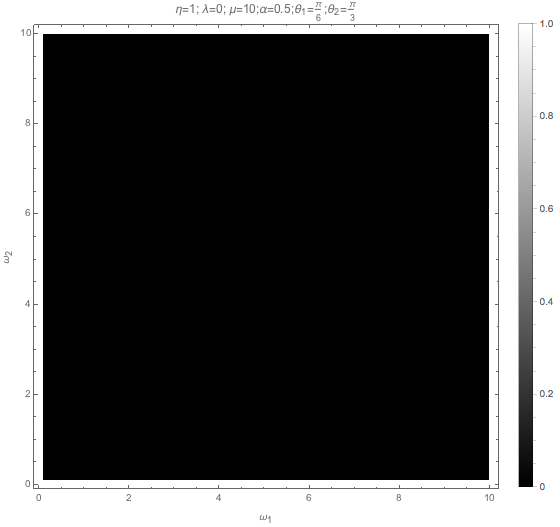
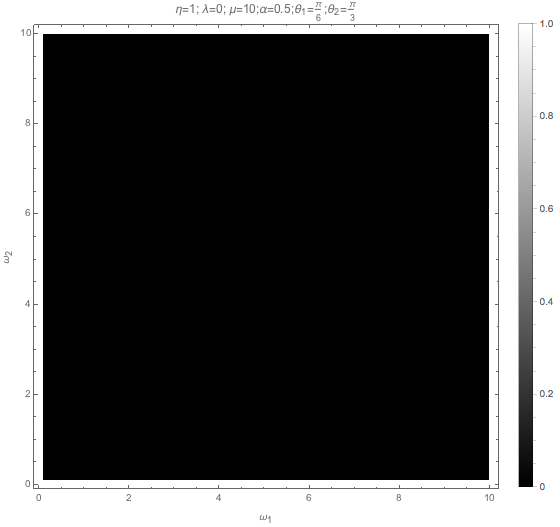

1.2.3. Two Beams Model¶
I need to understand several phenomena people mentioned.
Why crossing leads to instability?
What exactly is happening when we break the symmetries?
TODO
I need to make a table or something to really make it easy to access.
1.2.3.1. Two Beams Model¶
We use a simple two-beam line model.
Fig. 1.61 Two-beam model. Using this model we can check the effect of different symmetries.¶
For convinience of notations, we define a number density distribution function
where \(n_t\) is the total number density of all neutrino emitted, \(n(\hat v,\omega)\) is the number density with momentum direction \(\hat v\) and energy \(\omega\).
We also define
For two dimensional systems, we can calculate the neutrinos within an angle \([\theta,\theta+d\theta]\)
Similarly we can define the angular distribution for antineutrinos.
1.2.3.1.1. All Neutrino Beams¶
If all the beams are neutrinos, but with different energies for the left and right beams. The distribution function for beams is delta function. In fact, each beam is just half of the total neutrino number density \(n_t\).
The Hamiltonian is a sum of vacuum terms, matter terms, and self-interaction terms,
where
To linearize the equation of motion, we define the perturbed density matrix as
where we have removed the trace part because it is alway time independent.
The linearized equation of motion becomes
where
We know that real symmetric matrix has only real eigenvalues, from which we infer that \(\mu_1=\mu_2\) and \(\theta_1=\theta_2\) removes the instability.
For translational symmetric models, that is \(\partial_x\to 0\), we have the eigenvalues
where
All Antineutrino Beams
I only need to change \(\mu_i\to -\bar\mu_i\) and \(\omega_i\to -\bar\omega_i\), where \(\bar\mu=\sqrt{2}G_F \bar n_t\).
One Antineutrino and One Neutrino Beams
Assume that the left beam is neutrino beam and the right beam is antineutrno beam. The linearized equation of motion becomes
1.2.3.1.2. Simple Cases¶
We first consider a simple case, where \(\theta_1=\theta_2\equiv\theta\) \(\lambda=0\), \(\eta=1\), and homogeneous in x direction. For simplicity we define
Not A Self-consistant Example
This is not a self-consistant example since \(\theta_1=\theta_2\) indicates that \(\xi=0\). As we will see, no instability is present in this case.
However, we keep the term \(\xi\) because we need to analyze the effect of symmetry breaking. This example builds up a formalism.
The equation for perturbations becomes
Since \(\mu\) is the most important energy scale in this problem, we scale all energies with it.
where
The characteristic equation for this equation is
which is simplified to
where
Complete the square
The solution becomes
The condition to have positive imaginary part is
or
and \(f_1f_2\xi^2<0\). Recall the meaning of \(f_i\),
instability requires that we have a spectrum crossing, i.e., \(n_1\) and \(n_2\) have different signs.
Plug in the definitions of \(\Omega_i\),
From this we can infer
\(f_1f_2\) has to be negative, which means we can NOT have instabilities with only neutrinos or antineutrinos with all the symmetries we assumed. This is crossing.
\(-\omega_1+\omega_2=0\) will remove the instability. So we have to have both neutrinos and antineutrinos.
\(f_2-f_1\), \(\eta(\omega_2-\omega_1)\), and \(\mu\) set limit on each other.
\(\theta_1=\theta_2\equiv \theta\) removes the instability since it leads to \(\xi=0\). The emission has to be asymmetric in this simple two beams model. This is trivial since equal emission angle means the beams are not colliding.
But why?
We have these conclusions. But why?
What are the roles of
\(f_i\),
neutrino beam and antineutrino beam,
hierarchy,
neutrino number density variations,
variations of angular distributions of neutrinos,
variations of energy spectrum of neutrinos.
Real Symmetric and Skew Symmetric
Another way of understanding this equation is to think of it as the growth of the length of the vector \(\vec v = (\epsilon_1,\epsilon_2)^T\). For an arbitrary matrix differential equation of the form
we can always decompose the matrix \(\mathbf A\) into symmetric part and skew-symmetric part
We can indentify the effect of \(f_1-f_2\) but this is not particularly useful since we can not say anything about the eigenvalues of matrix \(\mathbf A\) from the eigenvalues of matrix \(\mathbf A^+\) and \(\mathbf A^-\).
1.2.3.2. Breaking Symmetries¶
For a line model, the symmetries we have are
Time translation symmetry;
Translational symmetry along the line;
Energy spectrum of the beams; One of particular interest is to have different neutrino spheres for different energies which can be investigated using two beam model.
Number density of left and right beams;
Angle of left and right beams;
With and without matter.
In this subsection we provide simple pictures of some the symmetries mentioned above.
1.2.3.2.1. Emission Angle Parity Symmetry¶
The emission angles change the value of \(\xi=1-\cos(\theta_1-\theta_2)\) as well as rescale the quantities by angle dependent factor \(1/\sin\theta_i\).
To see the importance of angles, we can redefine some quantities
The we will reach the same characteristic equation as Eq. (1.34). So the angles serves as shift of energy gap and angular distribution.
The region of instability changes in a convoluted way. Given angles we can always write down the expression and find out.
The criteria of existance of instability doesn’t change.
The region of instability changes.
1.2.3.2.2. Matter Effect¶
Including matter will define vacuum frequencies, \(\omega'_i\), which is effectively just a shift of vacuum frequencies. In the symmetric emission case, \(\omega'_1-\omega'_2\) is independent of matter effect. But breaking the emission symmetry generates the degeneracy,
Very large matter density shift the region to very small \(\mu\).
Varying Matter Potential
However, matter effect is not always this simple. Suppose we have different matter potential for different beams, when they collide they would have built a different phase due to matter effect.
The inhomogeneous matter effect has been studied in [Mangano2014]. It can excite high Fourier moments of polarization vector, which makes a lot of sense because it generates fine structure in the x direction.
This can be integrated into LESA effect.
- Mangano2014
Mangano, G., Mirizzi, A., & Saviano, N. (2014). Damping the neutrino flavor pendulum by breaking homogeneity. Physical Review D, 89(7), 73017. https://doi.org/10.1103/PhysRevD.89.073017
1.2.3.2.3. Translational Symmetry¶
Translational symmetry is explained by introducing Fourier transform in x direction. For each mode, a term that is proportional to Fourier mode index m. It only appears in diagonal elements, thus is effectively a shift of vacuum frequencies, thus energies of neutrinos.
For each Fourier mode
where we set \(\Omega=0\).
First term in RHS of Eq. (1.32) becomes
We now define \(\hat\omega''_i\),
where \(\hat k=k/\mu\).
The k term contributes to the difference between \(\Omega_{k,i}\equiv \hat\omega''_{k,i}+ f''_i\xi\).
Instability criteria doesn’t change. However, the regime of instability changes. We also know that the instability region is determined by
where \(\Delta \hat \omega''_{12} = \hat\omega''_1-\hat\omega''_2\). The instability region shift from
If \(\lvert \Delta\omega''_{12} + 2 k(\cot\theta_1-\cot\theta_2) \rvert\) becomes larger, the region of instability is shifted to larger \(\mu\), i.e., larger number density.
1.2.3.2.4. Number Density of Emission¶
A crossing is required to have instability, i.e., \(-f''_1f''_2>0\). Meanwhile the number density on the left and right have little effects on the existance of instability. It shifts the region of instability for \(\mu\).
1.2.3.2.5. Energy of Emission¶
Different energy of two beams will make sure \(-\omega_1 + \omega_2\neq 0\). It has no effects on the criteria but changes the \(\mu\) region of instability.
1.2.3.2.6. Time Translational Symmetry¶
Time Translational Symmetry
How about time translational symmetry? I need to write down the equation of motion that is related to time.
Two limits are of particular interest.
Adiabatic limit,
Superfast time variants.
1.2.3.2.7. Numerical Calculations¶
We assume the two beams have different energy, as indicated by \(\omega_1\) and \(\omega_2\) in Eq. (1.32).
For numerical calcualtions, we scale quantities using \(\mu\).
With symmetric angles for the two beams, I didn’t find instabilities. However, \(\theta_1\neq \theta_2\) leads to instabilities in IH, which is consistant with our expections.
For NH:
{kind=link}
 

{kind=link}
{kind=link}
{kind=link}
{kind=link}
{kind=link}
{kind=link}
{kind=link}
1.2.3.3. Non-local Symmetry Breaking¶
What was shown up there is breaking of symmetry locally. Similar to the discussion of varying matter potential, other symmetries can be broken globally, i.e., distribution as a function of spacetime coordinates.